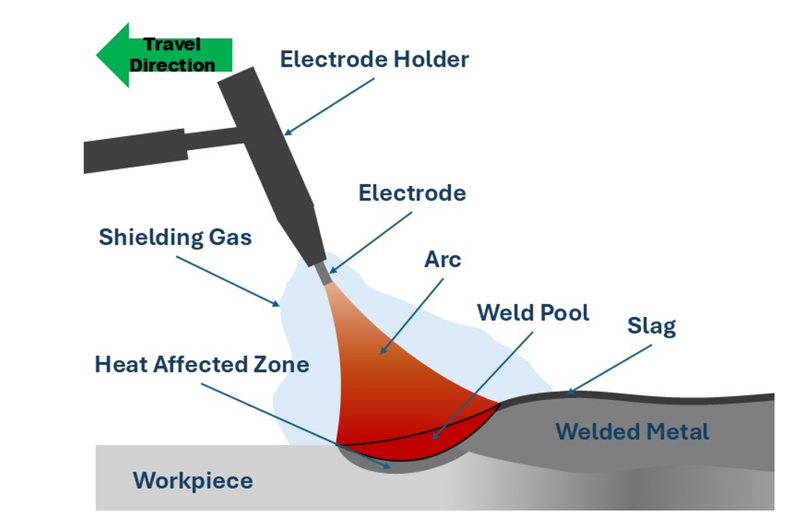

Theory
Tungsten Inert Gas (TIG) welding, also known as Tungsten Arc Welding (GTAW), is a precise and clean fusion welding process that uses a non-consumable tungsten electrode to generate the arc. The weld area is shielded from atmospheric contamination by an inert gas, typically argon or helium, ensuring a clean, oxidation-free joint. TIG welding is particularly suitable for stainless steel, aluminum, and thin-section metals due to its control over heat input and weld pool.

In inert gas shielded arc welding processes, a high-pressure inert gas flowing around the electrode while welding would physically displace all the atmospheric gases around the weld metal to fully protect it. The shielding gases most commonly used are argon, helium, carbon dioxide and mixtures of them. Argon and helium are completely inert, and therefore they provide completely inert atmosphere around the puddle, when used at sufficient pressure. Any contaminations in these gases would decrease the weld quality. Argon is normally preferred over helium because of a number of specific advantages. It requires a lower aro voltage, allows for easier arc starting and provides a smooth arc action. A longer arc can be maintained with argon, since arc voltage does not vary appreciably with arc length. It is more economical in operation. Argon is particularly useful for welding thin sheets and for out of position welding. The main advantage of Helium is that it can with stand the higher arc voltages. As a result, it is used in the welding where higher heat input is required, such as for thick sheets or for higher thermal conductivity materials such as copper or aluminium. Carbon dioxide is the most economical of all the shielding gases. Both argon and helium can be used with AC as well as DC welding power sources. However, carbon dioxide is normally used with only DC with electrode positive.
It consists of a welding torch at the centre of which is the tungsten electrode. The inert gas is supplied to the welding zone through the annular path surrounding the tungsten electrode to effectively displace the atmosphere around the weld puddle. The TIG welding process can be used for the joining of a number of materials though the most common ones are aluminium, magnesium and stainless steel. The power sources used are always the constant current type. Both DC and AC power supplies can be used for TIG welding. When DC is used, the electrode can be negative (DCEN) or positive (DCEP). DCEP is normally used for welding thin metals, whereas for deeper penetration welds, DCEN is used. An AC arc welding is likely to give rise to a higher penetration than that of DCEP.
The electrode may also contain 1 to 2% thoria mixed along with core tungsten or tungsten with 0.15 to 0.4% zirconia. The pure tungsten electrodes are less expensive but will carry less current. The thoriated tungsten electrodes carry high currents and are more desirable because they can strike and maintain stable arc with relative ease. The zirconia added tungsten electrodes are better than pure tungsten but inferior to thoriated tungsten electrodes.
Stainless steel poses unique welding challenges due to its tendency to warp from heat and its sensitivity to intergranular corrosion if overheated. TIG welding addresses these concerns by offering:
- Low and precise heat input
- Excellent arc and puddle control
- Minimal spatter and post-weld cleanup
- Superior weld aesthetics
In TIG welding, filler metal is added manually if needed, allowing the operator to independently control the arc and filler. For thin stainless-steel sheets, autogenous welds (without filler) can be performed. However, for structural applications or thicker sections, filler rods matching the base material (like ER308L for 304 stainless steel) are introduced.
Weld Quality Considerations:
- Shielding gas flow rate must be optimal to prevent oxidation.
- Shielding gas flow rate should be properly ground to a point for stable arc.
- Heat-affected zone (HAZ) must be minimized to retain corrosion resistance.
- Weld travel speed must be moderate to ensure proper fusion without overheating.

TIG welding is widely used in aerospace, food processing, medical devices, and automotive industries, where clean and precise joints are critical.
Apparatus required:
- TIG welding machine:
The main power source that generates a constant current for welding. It supplies the necessary electrical energy for the tungsten electrode to create the arc. - Tungsten Electrodes:
Non-consumable electrodes made from tungsten or tungsten alloys, used to generate the welding arc. They withstand very high temperatures without melting. - Stainless steel plates:
The workpieces to be welded. Stainless steel is often used for TIG welding because of its strength, corrosion resistance, and clean finish. - Argon Gas Cylinder (100% Argon, for Shielding):
A high-purity argon gas cylinder that provides shielding to protect the molten weld pool from atmospheric contamination such as oxygen and nitrogen. - Welding Torch with Ceramic Nozzle:
A handheld device that holds the tungsten electrode and directs the shielding gas flow. The ceramic nozzle shapes the gas flow and withstands high heat. - Filler Rods:
Metal rods added manually to the weld pool to fill gaps between workpieces. They match the composition of the base material for strong, defect-free welds. - Personal Protective Equipment – Gloves, Goggles, Aprone:
Safety gear to protect the welder from high heat, UV radiation, and sparks during welding. Essential for avoiding burns and eye damage. - Wire Brush, Hammer, and Grinder (for Cleaning):
Tools used to clean the workpiece before and after welding by removing oxides, slag, or impurities that can weaken the weld joint.